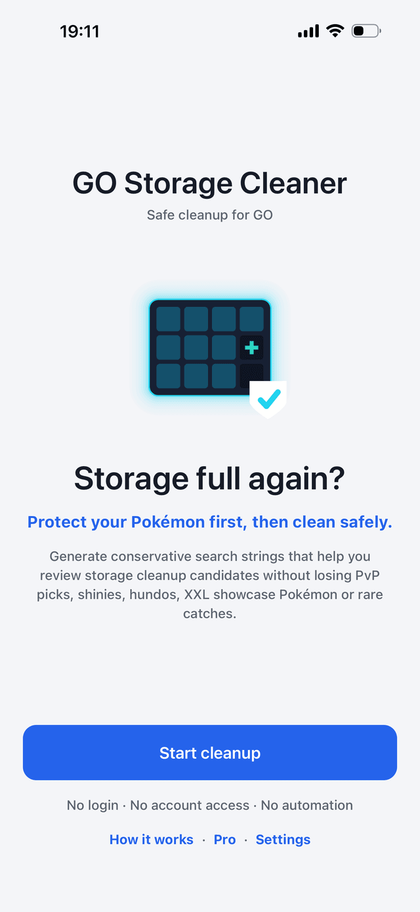
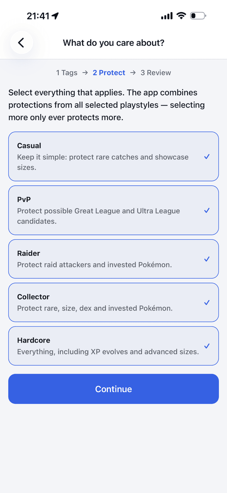
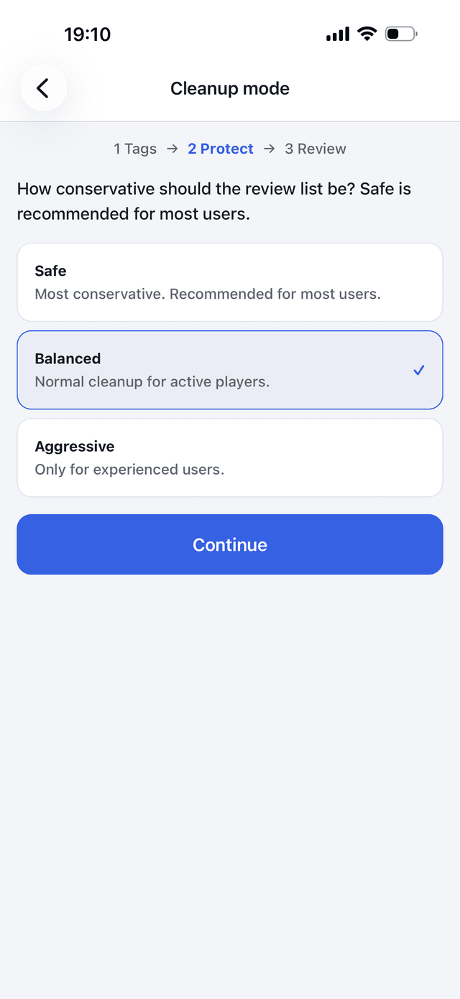

Clean up without the panic
Storage full again? GO Storage Cleaner helps you review transfer candidates more carefully, so you never let go of the creatures that matter.
1
Protect first
Before you review anything, lock down the creatures you care about — PvP candidates, raid attackers, shinies, rare and event creatures, background creatures, favorites and tagged groups.
2
Clean second
Then it generates conservative search strings you copy and paste into GO. You always review the results manually before transferring anything.
See the workflow
A simple protect-first flow before you review transfer candidates.



What's inside
A deliberately cautious workflow, built around not losing anything by accident.
- Conservative cleanup workflow
- Protect First / Clean Second structure
- Existing tag protection
- PvP protection for Great, Ultra, Master & Little Cup
- PvP Paranoid Sweep
- Raid protection with selectable IV strictness
- XP evolve protection
- Rare / event / background creatures protection
- Copy & paste search strings
- No login · no account access · no automation
Safe by design
GO Storage Cleaner is a planning tool. It never touches your game.
Never transfers for youIt only generates search strings — every transfer is your decision, made manually in-game.
No account accessIt does not access your GO account or log you in anywhere.
No connection to game serversIt does not connect to game servers or read your in-game data.
No automationIt does not automate gameplay. You stay fully in control.